![]()
library(tidyverse)
library(labsimplex)
# create function for generating a response surface
MySurfaceR2 <- function (x1, x2, noise = 4) {
if (length(x1) != length(x2)) {
stop('Vector parameters x1 and x2 must have same length')
}
if (any(any(x1 > 365), any(x1 < 278), any(x2 > 14), any(x2 < 0))) return(-1)
return(94 * (exp(-(0.03*(x2 - 6.31)^2 + 0.001 * (x1 - 291.33)^2))) +
rnorm(length(x1), 0, noise))
}An Exercise in Simplex Optimization
Abstract
TL;DR: Data sets for a two-factor Simplex optimization are generated in R code. The data is then moved to an Excel spreadsheet as a look-up table. An Excel ‘front end’ allows students to simulate a Simplex method search of the factor space. Code for generating the data, examples of the Excel spreadsheets, and a sample teaching laboratory description are provided.
Objectives and Context
The optimization process presented here can be used as a ‘dry’ laboratory experiment or as an assignment in a lecture. The purpose is to introduce upper-level undergraduates or graduate students to optimization methods for multivariate experiments. Students will perform a simplex optimization on a synthetic data set. The exercise focuses the student’s time on decision making and the method, rather than on performing chemical experiments.
The exercise shown here has datasets generated in R, but the exercise is presented to students as an Excel spreadsheet.
There are rather few simplex optimization experiments for education purposes available in the literature. 1, 2 The most recent example in J. Chem. Ed. is from 2005. 3 I agree with the authors that the time requirements of simplex methods often make them unattractive to time-limited teaching laboratories.
While there are few teaching experiments, the use of simplex optimization or methods that are conceptually very similar, are common in chemical research. The optimization of HPLC conditions by simplex is a good example. 4 Methods for fully automated HPLC optimization 5 use Baeysian methods for efficiency; however, they could be accomplished by simplex methods. Additionally, simplex methods are easier to introduce to students in a chemistry course that Baeysian methods.
Given that chemists are likely to encounter experimental optimization at some point in their future career, the exercise presented here is offered to provide an introduction to the concept.
Student Instructions
An example of the student instructions shows one way to guide students through the exercise. An editable .docx version is also available.
Data Sets
Students are provided a complete map of the factor space although it is hidden from them. Their task is to locate the optimum value. For simplicity, the data will have a global maximum value as the optimum value.
Generate a 2-dimensional response map to become a lookup table in Excel
Restricting the exercise to two dimensions allows students to construct a simplex “map” on paper. Below is a calculation method for the data using the excellent Labsimplex package by Cristhian Paredes and Jesús Ágreda.
The first code block below loads the libraries labsimplex and tidyverse. Tidyverse is optional but I find it useful for the data reshaping tools. The last part of the block creates a reusable function (MySurfaceR2) that will be called to generate response surfaces. The equation is in the form: \[yield=94 * e^{-0.03(x2-6.31)^2 + 0.001(x1 - 291.33)^2} + noise \] The variables x2 and x1 are part of the function from Labsimplex. The numerical values next to x2 and x1 are the optimum value for pH and temperature, respectively (pH = 6.31 and 291.33 K in the equation above). Changing these two numbers will produce a different response surface. All other numerical values in the equation are empirical constants that scale the data the way that I wanted them. The constants can be changed to new values to represent different reaction boundaries. The example shown here is for an aqueous solution. Therefore, pH has values from 0 to 14, and temperature has values from 278 to 365 K (just above freezing to just below boiling). The value 94 sets the maximum % yield to 94. The function MySurfaceR2 has if-then statements to reject values outside of the boundary conditions.
The following code block creates a response surface and shows a 3D plot of the result and a contour plot. It is readily visible that the global maximum is located at pH = 6.31 and temperature = 291 K.
# plots the surface
prspctv(surface = MySurfaceR2,
par = list(mar = c(0.5, 0.6, 0, 0)), phi = 30, theta = 30,
ltheta = -120, expand = 0.6,
xlab = 'Temperature (K)', ylab = 'pH', zlab = 'Yield (%)')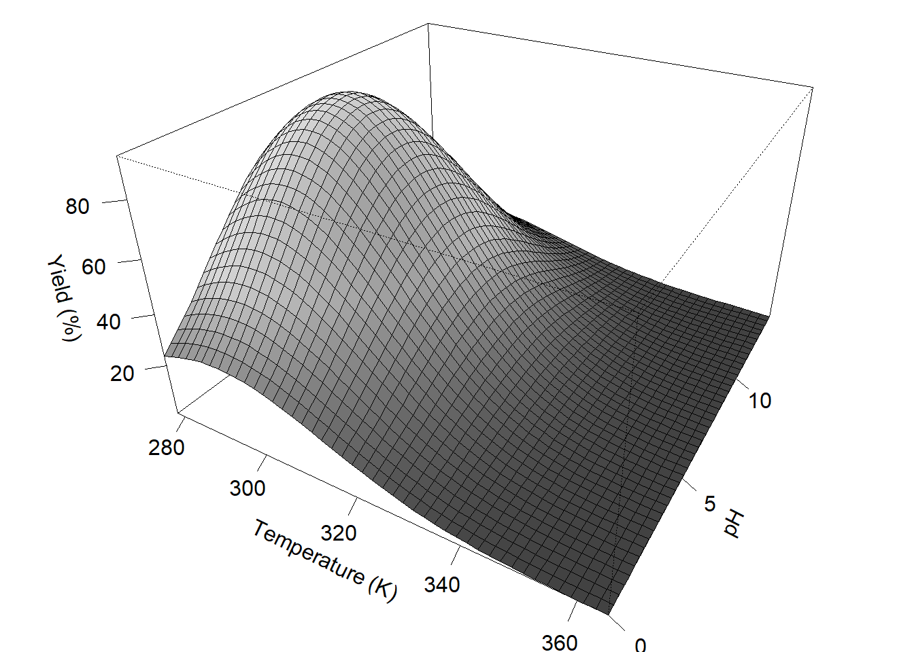
# contour plot of the surface
cntr(surface = MySurfaceR2, length = 200)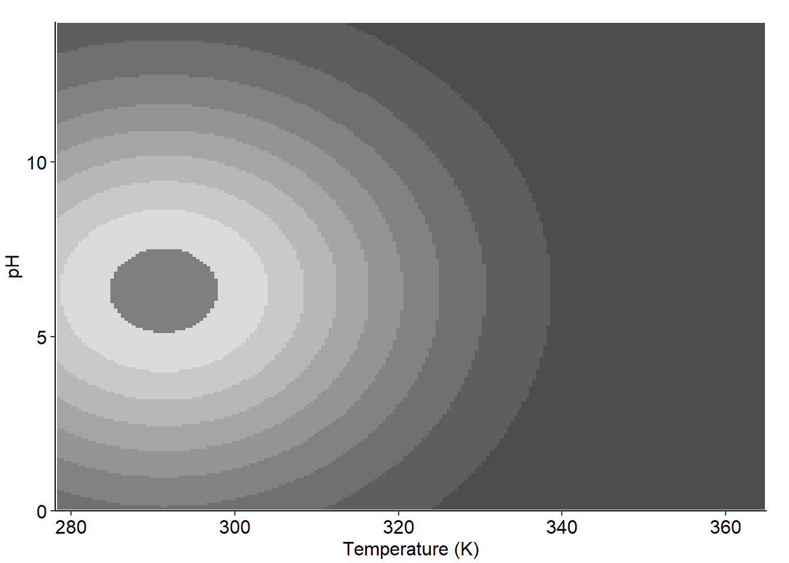
A perfectly smooth response surface is both unrealistic as a simulation of a chemical experiment, and would make the exercise too easy. The function allows the addition of noise to the response surface. To give a sense of the noise scaling, below are plots of the same response surface with noise set to 3, 8, and 18. Additional plots are shown with an example of how an algorithmic simplex process responds to the noise.
noises <- c(3, 8, 18)
seeds <- c(0, 13, 13)
for (ii in 1:3) {
prspctv(length = 45, noise = noises[ii], surface = exampleSurfaceR2,
par = list(mar = c(1.2, 1, 0, 0)), ltheta = -120, shade = 0.2, expand = 0.6,
xlab = 'Temperature (K)', ylab = 'pH', zlab = 'Yield (%)', ticktype = "detailed")
set.seed(seeds[ii])
simplexNoisy <- exampleOptimization(surface = exampleSurfaceR2, noise = noises[ii],
centroid = c(7, 340), stepsize = c(1.2, 10))
print(addSimplex2Surface(p = cntr(surface = exampleSurfaceR2, length = 200, noise = noises[ii]),
simplex = simplexNoisy))
plotSimplexResponse(simplexNoisy)
}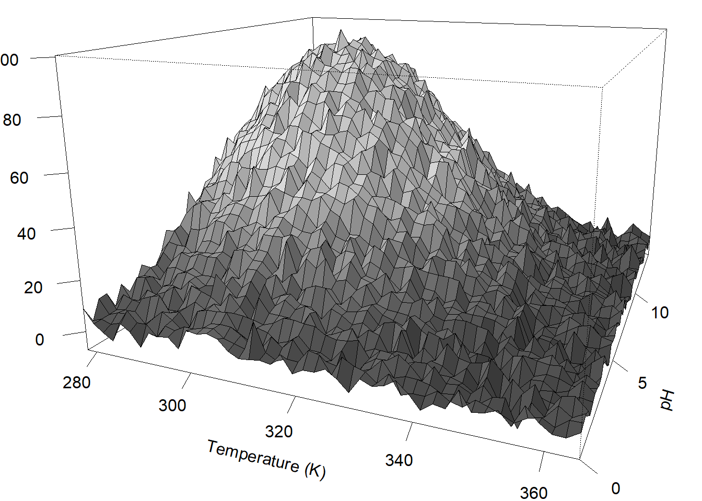
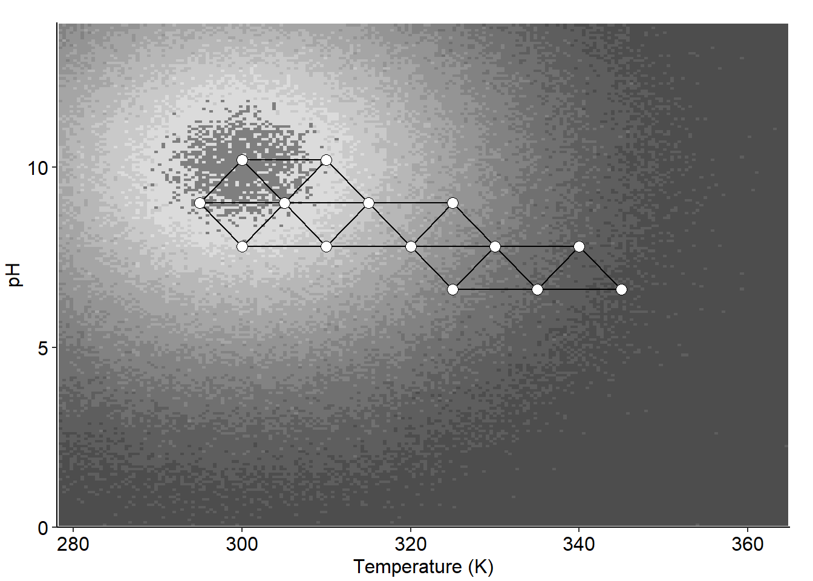
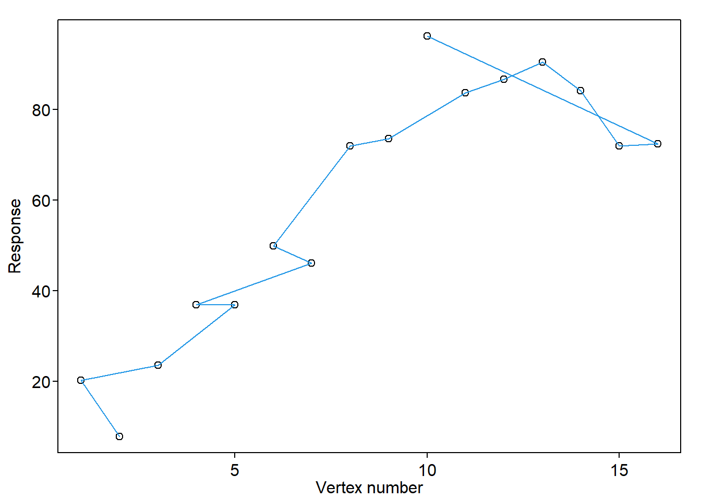
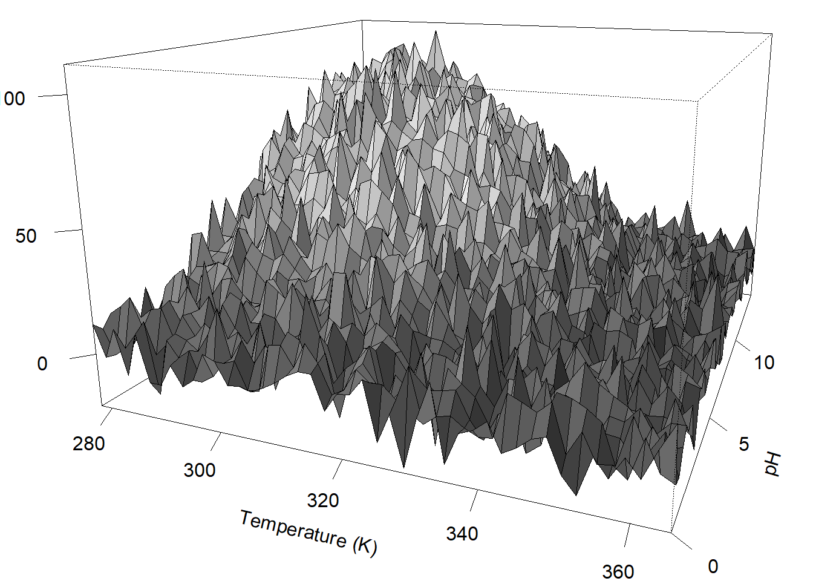
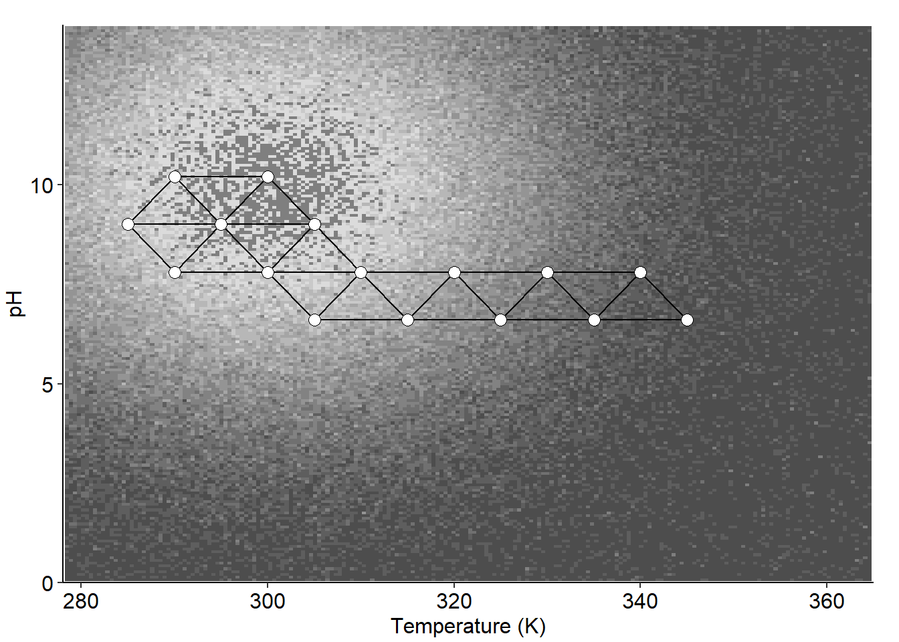
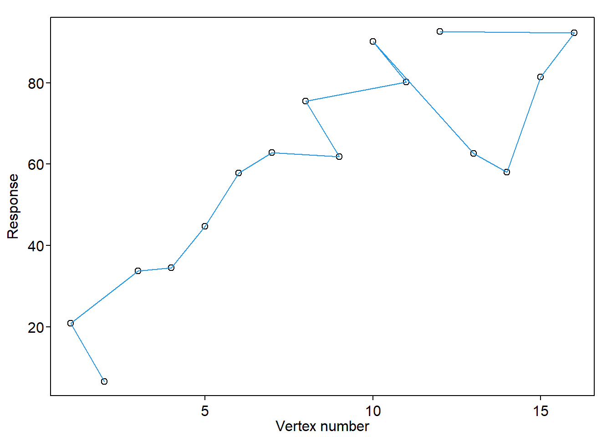
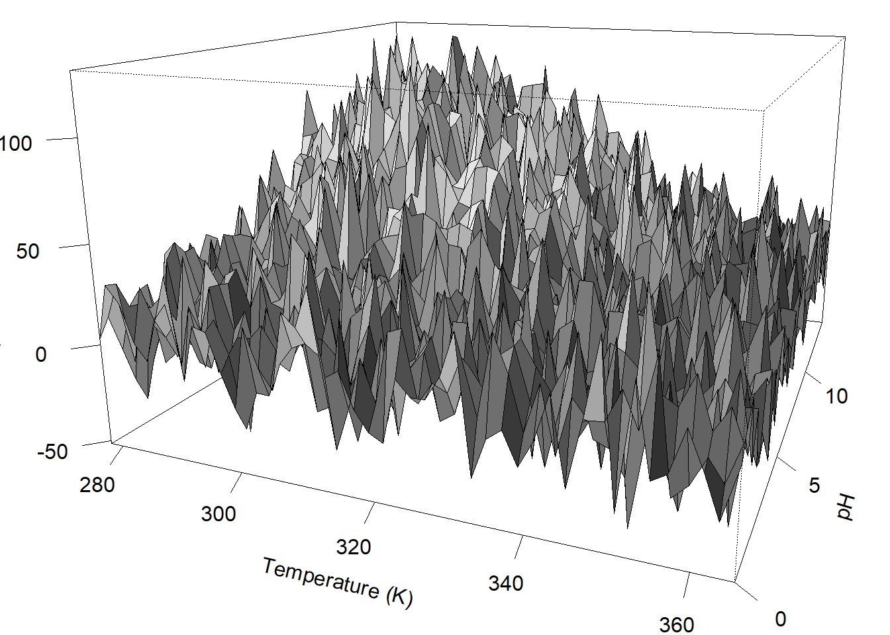
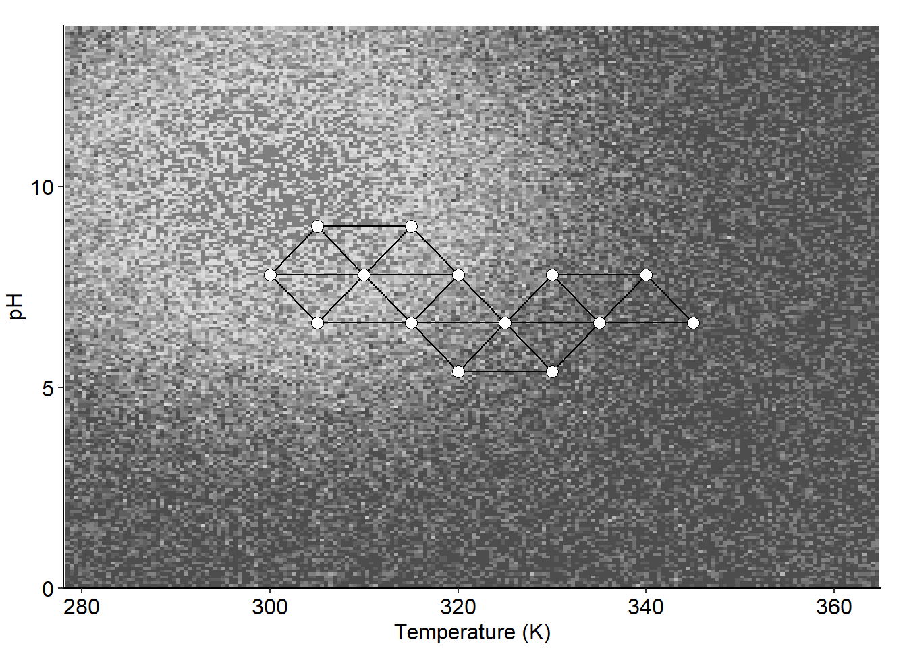
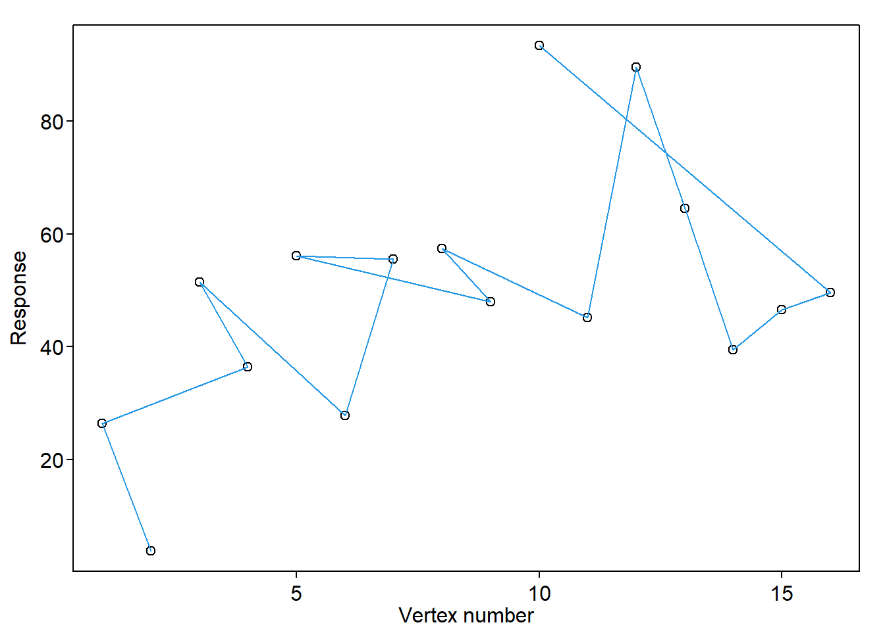
The response surfaces with noise at ‘3’ and ‘8’ are able to locate the global maximum (pH = 10 and 300 K in this case). However, the simplex usually yields a different result with the noise set to ‘18’. The degree to which one might want to challenge students can be selected with noise from 0 to about 18. Greater amounts of noise are not recommended since it tends to obscure the maximum value.
Generate Student Datasets
Below, the response surface function is repeated to make it conveniently located for making changes. Changing the number next to x1 and x2 changes the center of the global maximum. There is a write_csv function at the end to save a .csv file which can easily be incorporated into Excel.
The data reshaping steps are required to produce a rectangular formatted table that can be used as a “lookup” table in Excel.
MySurfaceR2 <- function (x1, x2, noise = 4) {
if (length(x1) != length(x2)) {
stop('Vector parameters x1 and x2 must have same length')
}
if (any(any(x1 > 365), any(x1 < 278), any(x2 > 14), any(x2 < 0))) return(-1)
return(94 * (exp(-(0.03*(x2 - 6.31)^2 + 0.001 * (x1 - 291.33)^2))) +
rnorm(length(x1), 0, noise))
}
cont.surf <- cntr(surface = MySurfaceR2, length = 200, noise = 4)
extrarow <- c(NA, seq(2,201,1))
surface <- cont.surf$data
surface <- surface %>% select(-brks)
surface <- surface %>% pivot_wider(names_from = x2, values_from = z)
surface <- rbind(extrarow, surface)
write_csv(surface, "exampledataset.csv")Making the Excel files
Most students have at least a basic familiarity with Excel, and of the students that I encounter very few have significant experience with R. Therefore, I transfered the datasets generated above to a spreadsheet lookup table.
The .csv file saved in the preceding code block should be opened in Excel and saved as a .xlsx spreadsheet. The dataset will be used as-is. An example spreadsheet is provided, exampledataset_lookup.xlsx, that shows one way to build the student interface as a second sheet in the file. The essential cell is the lookup function to extract the yield values from the dataset. In the example, cell C6 contains =VLOOKUP(C4,exampledataset!A3:GS201,HLOOKUP(C3,exampledataset!B1:GS2,2)). This is a nested horizontal and vertical lookup function that reports the yield based on the pH and temperature coordinates entered in cells C3 and C4.
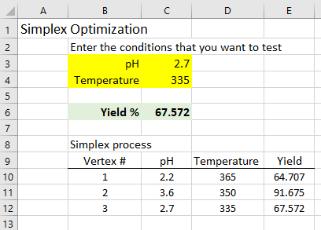
To prevent students from simply looking at the whole response surface for the global maximum, the sheet containing the response surface must be hidden. Right-click on the sheet containing the data and select ‘Hide’. Obscuring the lookup function in cell C6 is important to avoid accidental editing of the function and for avoiding confusion about the cell already containing something. Select cell C6 (or wherever the yield result will be) and select Home > Format > Format Cells. On the Protection tab, select the Hidden check box. Finally, go to the Review menu and protect the sheet. Use a password to protect the sheet to prevent clever students from undoing your work.
Example Spreadsheets
The .csv file shows the raw output of the R code.
The .xlsx file shows the data and interface sheets. The file has all features unlocked and visible so that you can see how it works. For making a student assignment, it is recommended to lock down the spreadsheet as describe above.
Footnotes
Stolzberg, R. J. Chem. Educ. 1999, 76, 834–838.↩︎
Steig, S. J. Chem. Educ. 1986, 63, 547–548.↩︎
Smith, E.T., Warnke, M.M. and Erickson, A.E. Simplex optimization of headspace-enrichment conditions of residual petroleum distillates used by arsonists. Journal of Chemical Education. 2005, 82(7), 1082.↩︎
Supalax Srijaranai, Rodjana Burakham, Richard L Deming, Tipwan Khammeng, Simplex optimization of ion-pair reversed-phase high performance liquid chromatographic analysis of some heavy metals, Talanta. 2002, 56(4), 655-661, https://doi.org/10.1016/S0039-9140(01)00634-8.↩︎
Dixon, T.M., Williams, J., Besenhard, M., Howard, R.M., MacGregor, J., Peach, P., Clayton, A.D., Warren, N.J. and Bourne, R.A. Operator-free HPLC automated method development guided by Bayesian optimization. Digital Discovery. 2024, 3(8), 1591-1601.↩︎